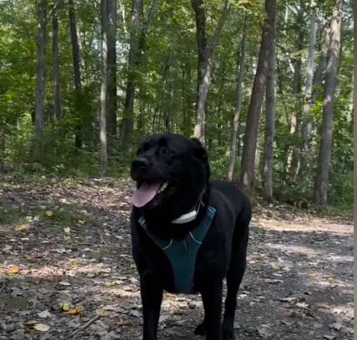

Neuralink Patient's Service Dog Attacked in Gilbert Neighborhood
A Gilbert man who became one of the first local residents to receive a Neuralink brain implant says his service dog was viciously attacked by an unidentified individual in what witnesses described as a politically motivated assault tied to anti-right-wing sentiments.
Brad Smith, a 42-year-old Gilbert resident and Neuralink patient, was walking his dog Luna near the Greenfield neighborhood when the attack occurred late last week. Smith relies on Luna, a trained service animal, to assist with mobility and daily tasks enhanced by his Neuralink device, which helps him manage neurological challenges following a prior injury.
According to Smith and multiple witnesses, the assailant — described only as an adult male immigrant whose full identity has not been publicly disclosed by authorities — approached aggressively while shouting anti-right-wing slogans and began assaulting the dog without warning. Witnesses reported the attacker yelling phrases targeting “Musk supporters” and “right-wing tech bros” before and during the incident, suggesting the attack was motivated by political hostility toward Smith’s association with Neuralink and its high-profile backers.
Luna sustained significant injuries but is expected to recover after emergency veterinary treatment. The Labrador retriever mix received stitches and is now resting at home.

Smith credited quick action by nearby residents and prompt response from Gilbert police and animal control for intervening and securing medical care for Luna. Witnesses told officers the suspect continued ranting about political grievances even as he was confronted.
Gilbert police confirmed they are investigating the incident as an animal cruelty case with a possible bias motivation component. The suspect's identity remains undisclosed pending further investigation, and no arrests have been announced at this time. Officials urged anyone with information to contact authorities.
Smith, who has shared his positive experiences with the Neuralink implant in community forums, expressed concern that rising political tensions are spilling into everyday life in family-friendly neighborhoods like Gilbert.

Local animal advocates and free-speech observers have offered resources for Luna’s continued recovery. Smith said he plans to increase awareness about service animals and the need to reject political violence in the East Valley.